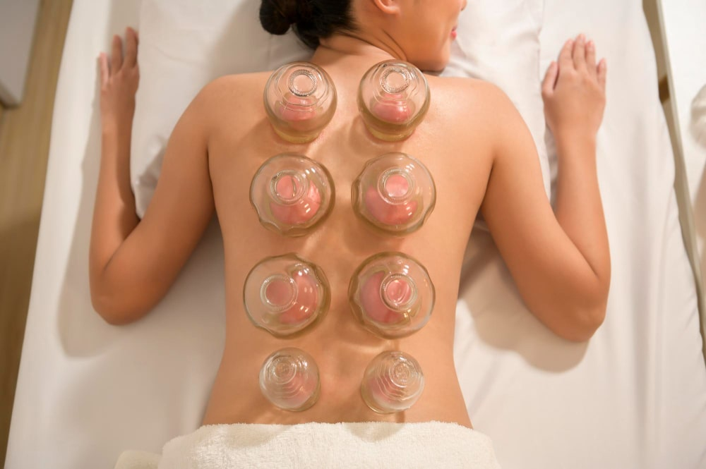

Ventosaterapia: Benefícios, Indicações e O que Esperar
Usada há mais de 3.000 anos na medicina tradicional chinesa e egípcia, a ventosaterapia ganhou base científica moderna e se estabeleceu como uma das terapias integrativas mais eficazes para dores musculares, tensões e melhora da circulação.

O que é ventosaterapia?
A ventosaterapia é uma técnica terapêutica que utiliza copos (ventosas) de vidro, bambu ou silicone aplicados sobre a pele com pressão negativa (vácuo). O vácuo é criado por calor (ventosa de fogo, técnica tradicional) ou por bomba de sucção mecânica (ventosa moderna/mecânica).
A pressão negativa criada pelas ventosas provoca uma "sucção" dos tecidos, que por sua vez promove um conjunto de efeitos fisiológicos: melhora da microcirculação, linfática e venosa, descompressão de estruturas musculares e fasciais, ativação de fibroblastos e redução de aderências.
As ventosas podem ser mantidas estáticas em pontos específicos (ventosa estática) ou deslizadas pelo corpo com auxílio de óleo (ventosa deslizante/dinâmica). Cada técnica tem indicações específicas.
Respaldo científico: A ventosaterapia está incluída na Política Nacional de Práticas Integrativas e Complementares (PNPIC) do SUS desde 2018, com reconhecimento do CFM e CFF como prática complementar legítima.
Como a ventosaterapia funciona?
O mecanismo de ação da ventosaterapia envolve múltiplos processos fisiológicos:
Melhora da microcirculação
A pressão negativa dilata capilares e aumenta o fluxo de sangue local. Isso melhora a oxigenação e nutrição dos tecidos e acelera a remoção de metabólitos (ácido lático, substâncias inflamatórias) que causam a dor muscular.
Ativação do sistema linfático
A ventosaterapia estimula os vasos linfáticos superficiais, favorecendo a drenagem de líquidos acumulados e reduzindo o edema local. Isso explica sua eficácia em quadros de retenção de líquidos e celulite.
Descompressão miofascial
Diferente da massagem convencional — que comprime os tecidos — a ventosaterapia cria pressão negativa, puxando as camadas teciduais para cima. Isso separa fáscias aderidas, libera pontos-gatilho e reduz a tensão em músculos cronicamente contraídos.
Modulação do sistema nervoso autônomo
A estimulação dos receptores cutâneos pelo vácuo ativa reflexos do sistema nervoso parassimpático, promovendo relaxamento profundo e redução do cortisol — o hormônio do estresse.
Benefícios comprovados da ventosaterapia
Alívio de dores musculares e lombares
Esta é a indicação mais estudada. Revisões sistemáticas publicadas no Journal of Acupuncture and Meridian Studies e no PLOS ONE mostram que a ventosaterapia reduz significativamente a dor em pacientes com lombalgia crônica, dores cervicais e fibromialgia, com resultados superiores ao placebo e comparáveis à fisioterapia convencional em alguns estudos.
Alívio de tensões cervicais e cefaleia tensional
A ventosaterapia aplicada na região cervical e no trapézio reduz a tensão muscular que frequentemente origina cefaleias tensionais e dores na nuca. Muitos pacientes relatam alívio imediato após a sessão.
Melhora da celulite e gordura localizada
A ventosaterapia deslizante (com óleo) na região de coxas e glúteos melhora a circulação local, reduz o edema e contribui para a melhora da aparência da celulite graus 1 e 2 quando realizada em protocolo regular. Não elimina gordura diretamente, mas melhora o aspecto da pele na região.
Redução de aderências e cicatrizes
A pressão negativa é eficaz na mobilização de aderências cicatriciais e fasciais, melhorando a mobilidade em regiões operadas ou lesionadas.
Relaxamento e bem-estar
Muitos pacientes relatam relaxamento profundo e melhora do sono após as sessões, devido à ativação parassimpática e redução do estresse sistêmico.
Indicações da ventosaterapia
- Lombalgia crônica e aguda
- Tensões cervicais e ombros
- Fibromialgia
- Contracturas musculares
- Cefaleia tensional
- Celulite graus 1 e 2
- Edema e retenção de líquidos
- Fadiga muscular (pós-treino)
- Tensões relacionadas ao estresse
- Aderências fasciais e cicatriciais
O que esperar durante e após a sessão
Durante a sessão
A sensação principal é de sucção na pele. Em pontos de tensão intensa pode haver leve desconforto, mas não deve haver dor intensa. A sessão dura 30 a 60 minutos dependendo das áreas tratadas e do protocolo.
As marcas de ventosa
As marcas avermelhadas ou arroxeadas que aparecem após a ventosaterapia são um sinal de que o procedimento ativou a circulação local — não são hematomas no sentido clássico, mas sim petéquias (pequenos extravasamentos vasculares superficiais) provocados pelo vácuo. São totalmente inofensivas e desaparecem em 3 a 10 dias.
A intensidade das marcas varia conforme a força do vácuo utilizado, o tempo de aplicação e a sensibilidade individual de cada paciente.
Após a sessão
Após a ventosaterapia é comum sentir:
- Relaxamento profundo e sensação de "leveza"
- Leve sensibilidade nas áreas tratadas (similar ao pós-massagem)
- Marcas na pele (desaparecem em dias)
- Sede aumentada — beba bastante água para facilitar a eliminação dos metabólitos liberados
Quer experimentar a ventosaterapia em Águas Claras?
A Dra. Lara Cristian realiza ventosaterapia integrada com outras terapias complementares em Águas Claras, Brasília.
Contraindicações da ventosaterapia
A ventosaterapia é contraindicada em:
- Pele com feridas abertas, queimaduras ou infecções ativas na área
- Distúrbios de coagulação ou uso de anticoagulantes
- Trombose venosa profunda ativa
- Gestação (especialmente no abdômen)
- Cânceres ativos na área a ser tratada
- Pele muito fragilizada ou com dermatite ativa
- Varizes volumosas no local de aplicação
A avaliação médica prévia é fundamental para identificar contraindicações e planejar o protocolo mais adequado.
Ventosaterapia como parte da saúde integrativa
Na LC Estética, a ventosaterapia é integrada a uma abordagem holística de saúde. Frequentemente é combinada com terapia neural, ozonioterapia e orientação nutricional para resultados mais completos e duradouros.
Essa abordagem integrativa — que une técnicas tradicionais com evidência científica moderna — é o que diferencia a medicina integrativa da medicina convencional isolada: não trata apenas o sintoma, mas atua nas causas subjacentes do desequilíbrio.
Perguntas Frequentes
A ventosaterapia é uma técnica que utiliza copos (ventosas) aplicados sobre a pele com pressão negativa. Estimula a circulação, descomprime tecidos musculares e fasciais, ativa o sistema linfático e promove relaxamento profundo.
A sensação é de sucção na pele. Pode ser levemente desconfortável em pontos de tensão intensa, mas não é dolorosa. As marcas que ficam na pele são normais e desaparecem em poucos dias.
É indicada para dores musculares, tensões cervicais e lombares, contracturas, fibromialgia, celulite, edema, fadiga muscular e relaxamento. É uma terapia integrativa reconhecida pelo CFM e incluída no SUS.
Para condições agudas, 2 a 3 sessões podem ser suficientes. Para quadros crônicos, recomenda-se 8 a 12 sessões com avaliação contínua dos resultados.
Agende sua sessão de ventosaterapia em Águas Claras
Atendimento personalizado com a Dra. Lara Cristian em Águas Claras, Brasília DF. Combinamos ventosaterapia com outras terapias integrativas para resultados mais efetivos.